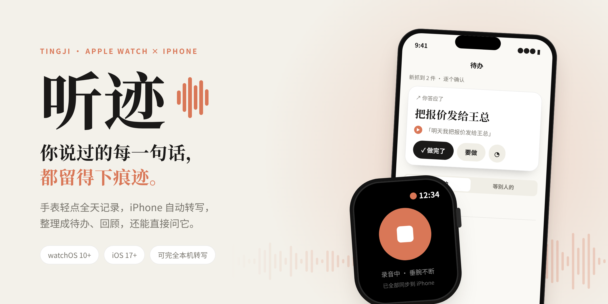
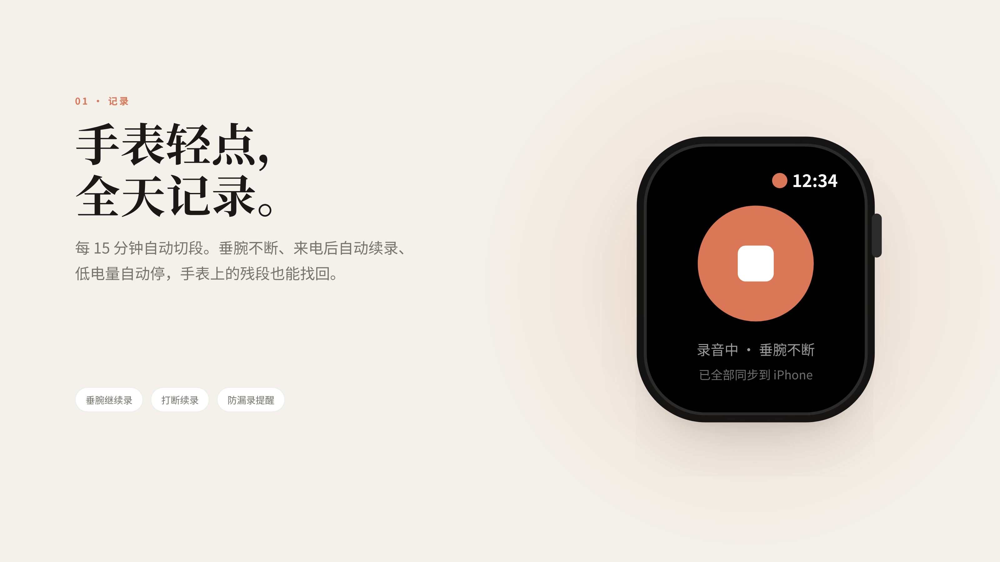
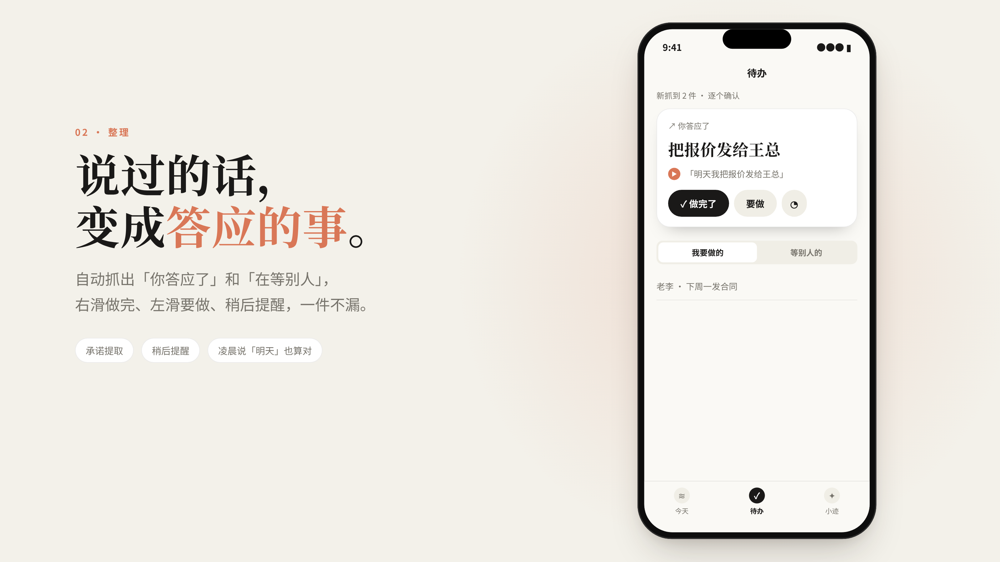
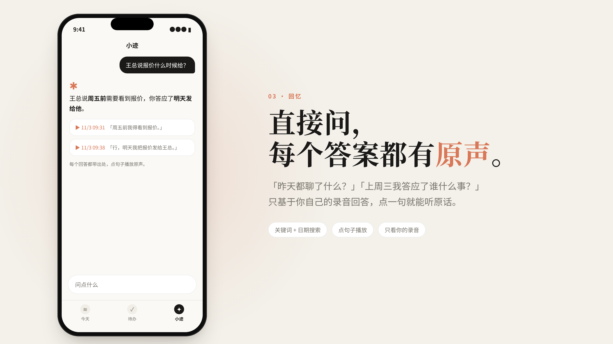
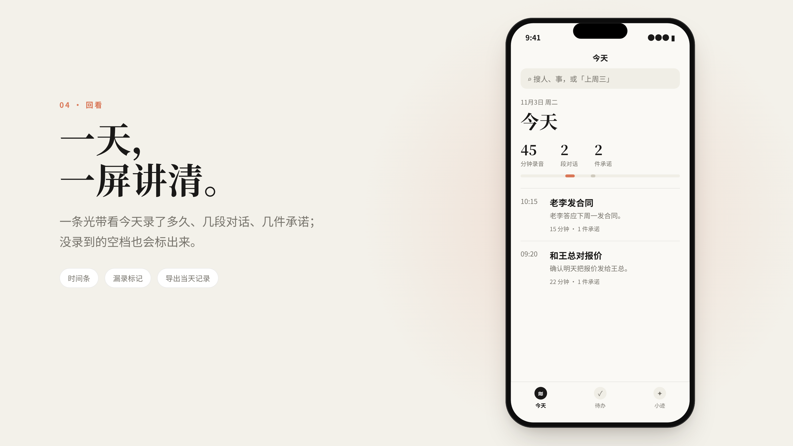
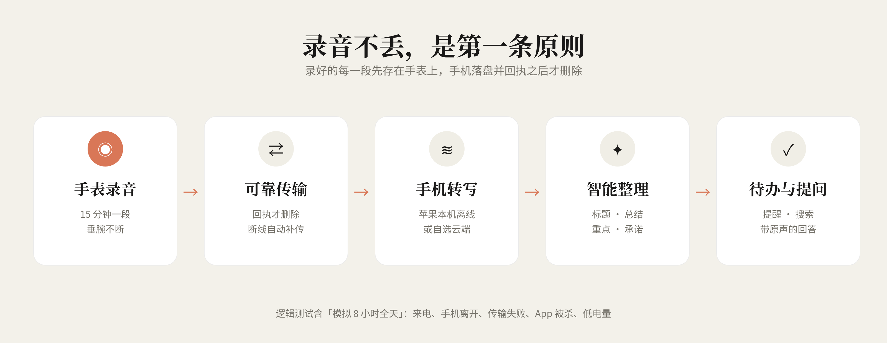

你说过的每一句话，都留得下痕迹。
Apple Watch 全天记录 · iPhone 自动转写整理 · 待办、回顾、带原声的回答
它做什么




录音可靠，是第一条原则

听迹目前处于开发验证阶段，尚未上架。图和视频中的界面、人名和对话为演示内容，不是真实录音；续航与长时间录音表现仍在实测中。

Apple Watch 全天记录 · iPhone 自动转写整理 · 待办、回顾、带原声的回答




